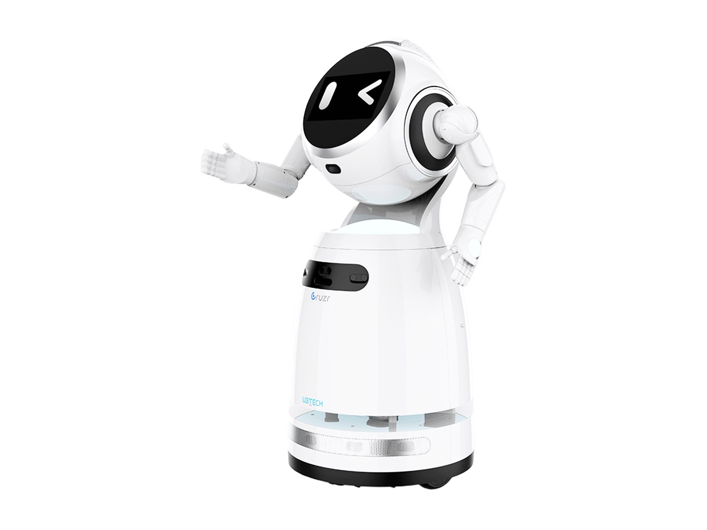

Key figures as stated by the manufacturer
1 of 6 stated · 5 gaps- Weight not stated
- Payload, moving not stated
- Runtime B at most 480minWarning: load condition not stated
- Max speed not stated
- IP rating not stated
- Indicative price not stated
How to read the figures
- 14kgA30.9lbA
- The letter in the grey square after a figure points to the source the figure came from. Robots with several sources carry several letters.
- Payload, moving
- A stroke before a field name means the figure carries a caveat that affects how it compares with other robots. The caveat is printed with the figure.
- 74.5lb
- Imperial figures are our own conversion unless the manufacturer states an imperial figure itself. The source letter always belongs to the metric figure — a conversion has no source of its own.
Deviations and variants in the key figures (1)
Runtime
Caveat Up to 8 hours on a single charge, with 24 hours of standby; no load condition is given.

Manufacturer's own photo.
Intended use, per the manufacturer
Source: ubtrobot.com · Retrieved
This category is not our assessment.
Full specifications
2 of 32 fields stated| Field | Value | Source and caveats |
|---|---|---|
| Physical | ||
| Weight | not stated | |
| Length | not stated | |
| Width | not stated | |
| Height | not stated | |
| Degrees of freedom | not stated | Caveat The specification image gives 15 servo motors for the full body and no degrees of freedom. A |
| Payload, moving | not stated | |
| Payload, standing | not stated | |
| Max speed | not stated | |
| Max slope | not stated | |
| Single obstacle | not stated | |
| IP rating | not stated | |
| Operating temperature, low | not stated | |
| Operating temperature, high | not stated | |
| Power | ||
| Battery | not stated | |
| Runtime | at most 480minWarning: load condition not stated | Caveat Up to 8 hours on a single charge, with 24 hours of standby; no load condition is given. B |
| Hot-swap battery | not stated | |
| Charge time | not stated | |
| Docking station | not stated | Caveat The page lists command, scheduled and automatic charging modes, and the specification image names an infrared automatic recharge sensor; no dock is named. B |
| Sensing and autonomy | ||
| LiDAR | not stated | |
| Cameras | High-definition camera. | Note The specification image gives "13 Million HD camera" without a unit, and also names a TOF sensor used as an anti-fall cliff detector. A |
| Onboard compute | not stated | |
| ROS 2 | not stated | |
| SDK languages | not stated | |
| Autonomy level | not stated | |
| Payload and expansion | ||
| Mounting interface | not stated | |
| Power out | not stated | |
| Data ports | not stated | |
| Commercial | ||
| Indicative price | not stated | |
| EU | ||
| CE stated | not stated | Records only what the manufacturer states regarding CE marking. |
| FCC stated | not stated | |
| UL stated | not stated | |
| CCC stated | not stated | |
Notes
- UBTECH calls Cruzr 1S a cloud-based intelligent service robot with a user-friendly humanoid design.
- The specification image shows a head with a screen face, a torso and two arms with hands on a round wheeled base, and names a wheel motor with a suspension system.
- Both arms are covered with a soft electronic skin, according to the specification image.
- The robot greets visitors, answers questions with a built-in multilingual large model and leads guided tours, according to the page.
- Navigation uses UBTECH's own U-SLAM system, which the producer says plans paths to the centimetre.
The manufacturer’s own page
The manufacturer’s original product page for this model.
Open the manufacturer’s page for Cruzr 1Shttps://www.ubtrobot.com/en/commercial/products/cruzr-1s
Sources
-
A
owebsite-cdn.
ubtrobot. · Retrievedcom/ resources/ image/ 2025/ 09/ 25/ 723611625238597. png -
B
Manufacturer product page. www.
ubtrobot. · Retrievedcom/ en/ commercial/ products/ cruzr-1s

One line per source, not per figure: a source has one retrieval date. The letter beside a figure points to the line it came from.